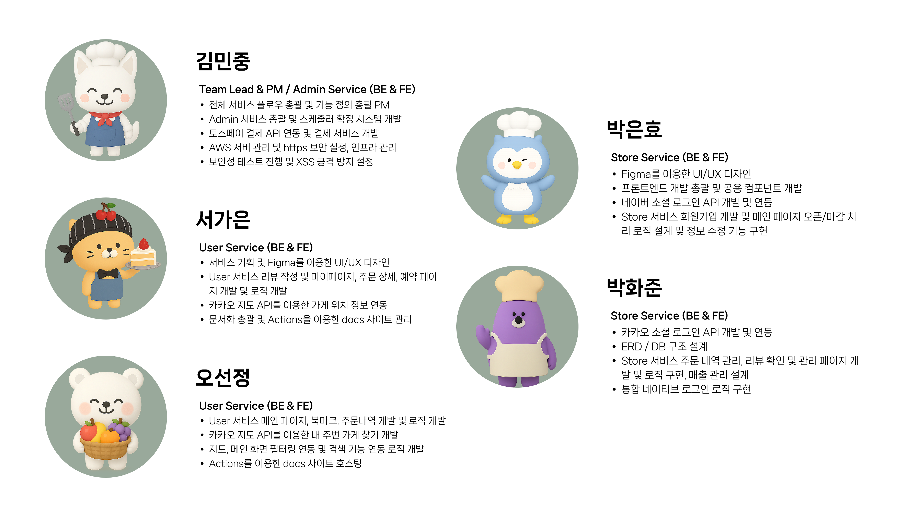

🥖 OhGoodFood - 마감 식품 특가 플랫폼
이미지를 클릭하면 OhGoodFood 플랫폼으로 이동합니다.
🔗 목차
🖐🏻 프로젝트 소개

한 해 전 세계에서 버려지는 음식물이 10억 5,000만 톤에 달합니다.
이는 전체 온실가스 배출량의 10%를 차지하는 큰 문제입니다.
만약 마감 임박 식품을 저렴하게 구매할 수 있다면,
소비자는 합리적이고 가치 있는 소비를,
판매자는 재고 처리 비용을 줄일 수 있습니다.
불필요한 폐기는 줄이고, 환경 오염과 비용 낭비를 막을 수 있습니다.
새로운 소비 패러다임 OhGoodFood와 함께 모두에게 더 나은 가치를 선사하세요!
🎯 주요 기능
👤 사용자
- 예약 가능한 상품 조회 및 오늘 픽업 & 내일 픽업 제품 선택 가능
- 필터링 기능을 통해 주문 상태 필터링 조회 가능
- 리뷰 작성 및 내가 작성한 리뷰, 전체 리뷰 조회 가능
- 북마크를 통한 관심 가게 등록 가능
🏪 가게(사장님)
- 오굿백 상품 등록 및 마감 가능
- 예약 목록 확인 및 픽업 처리, 취소 처리 가능
- 내가게 리뷰 확인 및 월별 매출 확인 가능
👀 관리자
- 가게 등록 요청 승인 및 거절을 통한 사용자 관리 가능
- 전체 회원 조회 및 상품 목록 조회 가능
- 예약, 픽업 상태 확인 및 관리 가능
- 사용자, 사장님에게 알림 전송 가능
- 전체 어플 매출 관리 및 통계 기능 제공
👥 팀 소개

🔧 기술 스택
| 구분 | 기술 스택 |
|---|---|
| Frontend | |
| Backend | |
| Database | |
| Server Build | |
| Cloud | |
| 외부 API 및 연동 |
📂 파일 구조
├─java
│ └─kr
│ └─co
│ └─ohgoodfood
│ ├─config # ✅ Spring 설정 클래스 (MvcConfig, 파일 업로드 설정)
│ ├─controller # ✅ 클라이언트 요청 처리 컨트롤러 계층
│ │ ├─admin # └─ 관리자용 컨트롤러 (가게 승인, 통계 조회 등)
│ │ ├─common # └─ 공통 기능 컨트롤러 (로그인, 알림 등)
│ │ ├─store # └─ 사장님용 컨트롤러 (상품 관리, 리뷰 확인 등)
│ │ └─users # └─ 일반 사용자 컨트롤러 (메인화면, 주문, 마이페이지 등)
│ ├─dao # ✅ MyBatis Mapper 인터페이스 (DB 접근)
│ ├─dto # ✅ DTO/VO 클래스
│ ├─service # ✅ 비즈니스 로직 처리 계층
│ │ ├─admin # └─ 관리자 서비스 구현
│ │ ├─common # └─ 공통 서비스 (알림, 인증 등)
│ │ ├─store # └─ 사장님 서비스 구현
│ │ └─users # └─ 사용자 서비스 구현
│ └─util # ✅ 공통 유틸 클래스 (인터셉터 등)
├─resources
│ └─kr
│ └─co
│ └─ohgoodfood
│ └─dao # ✅ MyBatis 매퍼 XML 파일 위치 (SQL 정의)
└─webapp
├─css
│ └─font # ✅ 웹폰트 파일 저장
├─img # ✅ 정적 이미지 파일 저장
├─popup # ✅ 팝업 전용 JSP (모달 등)
├─resources
└─WEB-INF
├─spring
│ └─appServlet # ✅ Spring DispatcherServlet 설정 XML 위치
└─views
├─admin # ✅ 관리자 전용 JSP 뷰
├─common # ✅ 공통 JSP 뷰
├─store # ✅ 사장님 전용 JSP 뷰
└─users # ✅ 사용자 전용 JSP 뷰
🧱 시스템 구조

🚀 빌드 방법
1. Prerequisites (필요 환경)
Java 11
Maven 4.0.0
STS(Spring Tool Suite) 또는 IntelliJ IDEA
2. 우리 프로젝트 git clone
git clone https://github.com/OhGoodTeam/OhGoodFood.git
cd repo;
- clone 해서 repo로 이동
- main repo를 기준으로 합니다.
3. Maven 실행하기
3.1. STS
- 프로젝트 우클릭 → run as → maven clean → build sucess
3.2. IntelliJ
- File → Open →
pom.xml선택 - 오른쪽 Maven 창에서 Sync/Reload All Maven Projects
4. Maven Export
4.1. STS
- 프로젝트 우클릭 → Run As → Maven clean → Maven Install
- 루트디렉토리/target 에 war파일 생성 → Tomcat 배포시 ROOT.war로 이름 변경 후 배포
4.2. IntelliJ IDEA
- File → Project Structure → Artifacts
- Name :
ohgoodfood:war, TypeWeb Application Archive→ OK - target 폴더에
ohgoodfood.war파일 생성 완료
🤝 협업 규칙
🥖 Branch 규칙
- 메인 브랜치와 개인 이름별 브랜치를 구분하여 사용한다.
- main : 배포 가능한 상태의 코드만을 관리하는 브랜치
- dev : main 배포 전 전체 기능 통합 test 브랜치
🥖 Commit 규칙
- 커밋 메세지는 다음과 같은 형식으로 작성한다.
[이름] 명령:구현설명 ex) [gildong] feat:로그인서비스구현
- 깃 컨벤션
- feat : 로직 구현
- docs : 정적 파일 추가
- fix : 버그 수정
🥖 PR 규칙
- 공용 템플릿을 사용하여 PR을 작성 : PR 템플릿 바로가기
🥖 Issue 규칙
- 공용 템플릿을 사용하여 issue 작성 : issue 템플릿 바로가기